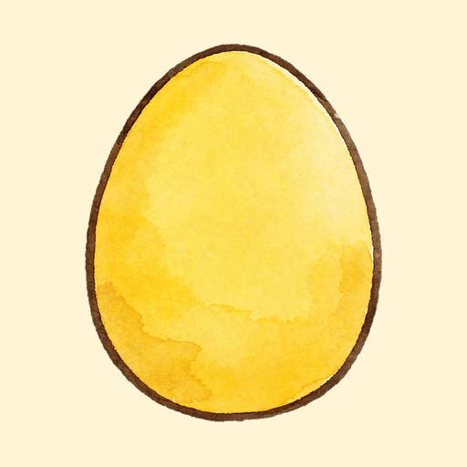

おもろグ〜
笑える投稿、あつめました。
タッチで、過去のおもろっちや、育った段階も見れるよ
1周目｜名前：おもろっち
0
おもろは1日4個までだよ
記録のバックアップ
スマホを変える時や、記録が消えてしまった時のために、記録を保存しておけます。
笑える投稿、あつめました。
タッチで、過去のおもろっちや、育った段階も見れるよ
1周目｜名前：おもろっち
0
おもろは1日4個までだよ
記録のバックアップ
スマホを変える時や、記録が消えてしまった時のために、記録を保存しておけます。
🕖 毎朝7時ごろに、3つ追加

ホーム画面への置き方iPhoneの方
Safariで開いて、共有のボタンから「ホーム画面に追加」。
Androidの方
Chromeで開いて、右上のメニューから「ホーム画面に追加」。
パソコンの方
ChromeやEdgeで開いて、アドレスバーの右端に出るインストールのマークから追加。
追加すると、卵のアイコンでアプリみたいに開けます。
おもろっちを育てている方におすすめです。
育ち具合の記録は、開いたブラウザの中に残るしくみです。ブラウザや端末が変わると、記録は引き継げず、また卵からになります。
ホーム画面に追加しておくと、いつも同じ場所から開けて、記録も消えにくくなります。
ブラウザのキャッシュやサイトデータを消すと、記録も消えてしまうことがあります。消さないようにしてくださいね。
ThreadsとInstagramで見つけた、コメント欄が大喜利みたいに盛り上がっている、平和で面白い投稿を集めたログ（記録）です。毎日3件ずつ、新しい投稿が増えていきます。
大喜利のお題にセンスのある回答が集まる投稿など、読むとほっこり笑えるものだけを集めています。炎上や言い争いの投稿は載せません。
ThreadsとInstagramの人気投稿を実際に開いて、コメント欄が平和に盛り上がっていることを確認したものだけを載せています。
毎朝7時ごろに3件ずつ追加されます。トップには最新10件が並び、それより前のものは下の「これまでのおもろ」から見られます。
面白かった投稿に押すボタンです。1つの投稿につき1回まで押せます。あなたが押した「おもろ」の数が増えると、このサイトのマスコット「おもろっち」が成長します。
おもろグ〜のマスコットです。あなたが押した「おもろ」の数が増えると、卵から少しずつ成長します。今の姿は、ページ上部の「おもろっちのおうち」で見られます。
各投稿カードの「元の投稿を見る」から、ThreadsやInstagramの元の投稿へ移動できます。大喜利の回答は、元の投稿のコメント欄で読めます。